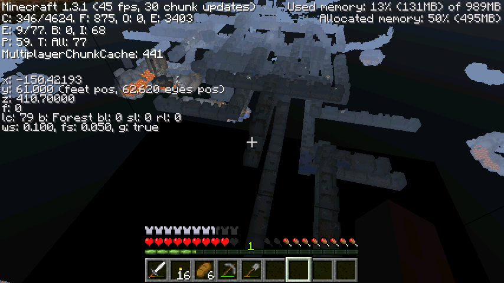

继续往废弃矿洞方向推进了几百米之后，现在可以确定的确是矿洞了
其实这种透视的手段，并不能看清楚细节
特别是远处的洞穴，基本上就只能看出一个轮廓
因此这种方法对于玩家的要求也很高，玩家要对各种类型洞穴的性质特征要有很清晰的了解
像废弃矿洞，特点就是节状长条直线型，聚集交错在一起，还有一些次级特征（例如某些十字路口的大方形空间、节末可能有的向下阶梯暗室）
至于地牢，特点是正方形，通常连接着其他天然洞穴，可以看到刷怪笼的火光
这些特点都是要熟记于心的，加上长期的经验，才可以很快速的鉴定出各种洞穴的类别
381楼
2012-08-05 23:45